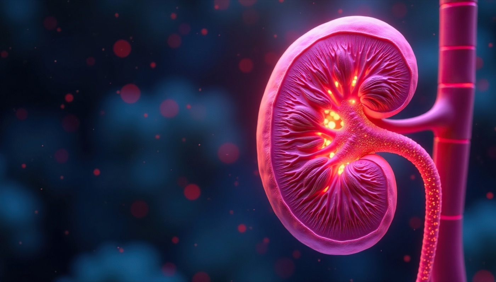

Kostenlose klinische Entscheidungstools für Stationsärzte: eGFR-adaptierte Dosierungen, Risikoscores und Algorithmen. Alles lokal im Browser.
Tool öffnen →
Entstanden aus dem Klinikalltag, in Berlin. Statt zwischen fünf Apps, drei PDF-Tabellen und dem Renal Drug Handbook hin- und herzuspringen: eine Oberfläche, alles verknüpft.
Körpergewicht und eGFR werden einmal eingegeben — die Dosierungsvorschläge in allen Modulen passen sich automatisch an. Eingaben bleiben lokal im Browser, kein Backend, kein Tracking, keine Datenabfluss-Risiken.
Zehn klinische Module in einem Browser-Tool — von CKD-Staging bis Lungenembolie. Ohne Installation, ohne Login, ohne Datenleck.
KDIGO-Risikomatrix mit automatischer Einordnung. Stadien-bezogene Empfehlung und fertige Arztbrief-Textbausteine — Copy & Paste in die KIS-Dokumentation.
eGFR-adaptierte Dosis für über 100 Wirkstoffe. Warnungen bei Kontraindikation. Freitext oder Bild-OCR als Eingabe.
5-Schritt-Wizard nach ACC/AHA 2026 Guideline. Risiko-Score, LDL-Ziele, Statin-/PCSK9-Eskalation.
NMH/UFH Prophylaxe & Therapie, UFH-Perfusor-Dosierung, HIT-II-Algorithmus. Gewichts- und GFR-adaptiert.
Wells & PERC, D-Dimer-Schwelle, sPESI, ESC-Risikoklassifikation, Therapiedosis nach Gewicht & eGFR.
VHF (CHA₂DS₂-VASc), AKI-Staging, HWI, Anämie/MBD, Diabetes, Hypertonie, Gicht, Antiaggregation — alles integriert.
Jedes Modul ist verknüpft mit der jeweils aktuellen Empfehlung — von KDIGO 2026-Drafts bis zu den gerade veröffentlichten ACC/AHA-Lipid-Guidelines.
Open-Source, ohne Login, ohne Tracking. Direkt im Stationsbrowser einsetzbar.
Jetzt öffnen →